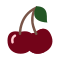

About
Merlot is one of the world’s most well known wines that originated in Bordeaux France. It is the fifth most planted grape in Italy and is typically used in a variety of wine blends. Tuscan Merlot has been coined a “Super-Tuscan” Wine, a high quality wine that should be designated DOC or DOCG but is unable to because the wine includes non-indegenous grape varietals. A fun fact about Merlot is that it is the genetic “child’ of Cabernet Franc.
Taste Profile
Merlot
"mer-LO"

Dominant Flavors
- 
Black Cherry
Plum
Herbs
Vanilla
Grapes
- Merlot:
provides fruity aromas and supple full-bodied flavours.
Pairings
- Cheese:
Aged Goat, Gorgonzola, and Cheddar - Meat:
beef short rib, pork loin, roast turkey, fillet mignon, roast veal, rack of lamb - Vegetable:
roasted tomatoes, ratatouille, and mushrooms - Other:
tarragon, garlic, barries, tomato sauce based dishes
Serving

15℃- 20℃

Burgundy Glass
Regions
Friuli Venezia Giulia
Veneto
Trentino Alto Adige
Tuscany
Umbria
Lazio